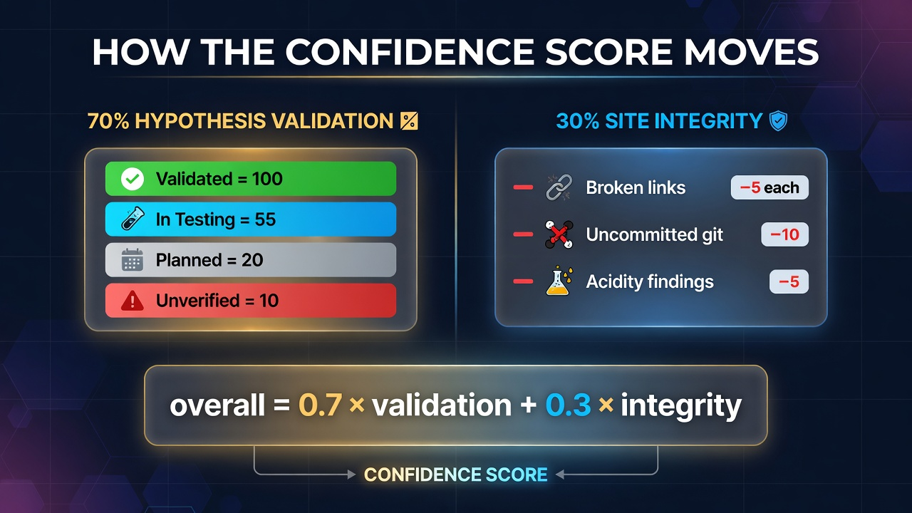
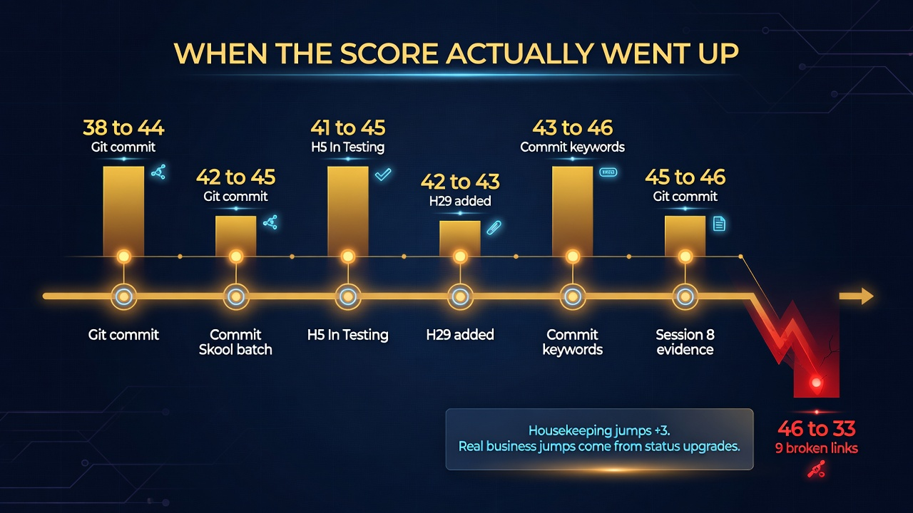

📈 How to Move the Confidence Score
Single master document for raising the Business Model Confidence Score. Every historical jump on this site is explained below. Most of them were housekeeping. The ones that were not are the only pattern that will take the number past the integrity ceiling. See confidence-report.html and H9 in HYPOTHESIS.md.
- Formula:round(0.7 × Validation + 0.3 × Integrity)
- Integrity ceiling after git + links:77.5 (acidity findings still open)
- What adding pages does:Nothing, unless a hypothesis changes status
- Highest-leverage business gate:H9 — $10k across 2 paid launches
🖼 The Two Engines

A 10-point integrity move is only +3 overall. A single hypothesis going ⚪ Planned (20) → 🟡 In Testing (55) is +1.2 validation, +0.8 overall. A hypothesis going 🟡 → ✅ is +1.6 validation, +1.1 overall. The formula punishes broken links hard (−5 integrity each, so 9 links = −13.5 overall) and barely rewards more documentation.
📜 When the Score Actually Went Up

Read every rise in the version history as one of two kinds. Housekeeping restores points the scan deducted. Business moves change a hypothesis status emoji. Only the second kind compounds.
| Run | Move | What happened | Kind | Lesson |
|---|---|---|---|---|
| v1.0.0 → v1.0.1 | 38 → 44 | Committed the 58-file uncommitted batch | Git | −10 integrity is +3 overall. Commit before the scan. |
| v1.5.3 → v1.5.4 | 40 → 43 | Cleared the temporary uncommitted deduction | Git | Same +3. Recurs every time a batch sits dirty. |
| v1.6.6 | 41 → 42 | Skool went live; H5 upgraded ⚪ → 🟡 (8 signups) | Status | First real measured signups. Beat a simultaneous −10. |
| v1.6.6 → v1.6.7 | 42 → 45 | Committed the Skool-launch batch; Integrity 77.5 | Git | The H5 upgrade plus a clean tree is the 45 peak of that week. |
| v1.8.1 | 41 → 44 | Uncommitted-work deduction cleared after merge | Git | Merges that leave files dirty cost the next scan 3 points. |
| v1.9.2 | 37 → 42 | Fixed 2 broken-link targets the prior run found | Links | Never link hyp-hN.html until the file exists. |
| v1.9.11 | 41 → 45 | PR #9 merged: H5 In Testing + Integrity 77.5 | Status + Git | Largest combined jump. Measured signups plus a clean tree. |
| v1.9.18 | 42 → 43 | H29 added as 🟡 In Testing (Validation 31.3 → 32.1) | Status | New hypotheses only help if they enter as 🟡, not ⚪. |
| v1.9.29 | 43 → 46 | Committed pricing-feedback + keywords batch | Git | This 46 is the integrity-ceiling score (Validation ~32, Integrity 77.5). |
| v1.9.35 | 43 → 45 | Validation 32.8 → 35.7 as H16 mechanics crystallized | Scoring | Operational specs are not paid evidence. Treat as a scoring tick, not H16 validated. |
| v1.9.36 | 45 → 46 | Session 8 field evidence; Validation 35.7 → 36.9 | Evidence | Live cohort artifacts can tick Validation without a status change. Small. |
| v1.9.44 | 46 → 33 | 9 dangling hyp-h26 / hyp-h27 links (−45) + uncommitted (−10) | Links | Measurement correction. This playbook's housekeeping pass reverses it. |
The 43 ↔ 46 flicker between v1.9.28 and v1.9.31 is documented in Score Fluctuation Analysis v1.0.0 — it was entirely the uncommitted-work switch. Community loops that protect this number (without being the number) live on Community Building & Model Score.
🚫 What Does Not Move the Score
- 📄Adding pages. v1.9.36 through v1.9.43 held flat at 46 across welcome messages, member-tier tools, course-progress loops, and YouTube telemetry. Evidence text can be added forever. The emoji on the Status line is what the rubric reads.
- ⚙️Confirming setup. Freemium entitlements, discoverability keywords, and setting Skool to Public did not upgrade H5. $0 and $1 joins are not paid enrollments.
- 🔬More research on H6. v1.0.3 added independent TAM/SAM/SOM verification and the score did not move. H6 stays ⚠️ until the ~50k SOM figure is audited or observed.
- ⚪Adding a new ⚪ Planned hypothesis. It dilutes the average. H22, H25, H28 entered at 20 and pulled Validation down. Only add a hypothesis if it is already 🟡 or you are willing to take the dilution.
- 🧪Re-running the sanity check with no status or integrity change. That publishes a new version at the same number. Fine for an audit trail; not a lever.
🧹 Housekeeping Playbook (do this every run)
- Never link a
hyp-hN.htmlthat does not exist. H26 was skipped in the v1.60.0 merge (ID collision). Dual-persona / FDE citations go to hyp-h30.html. H27 now has hyp-h27.html. Each danglinghrefis −5 integrity. - Commit the batch before asking for a new score. Uncommitted work is −10 integrity, −3 overall, every distinct dirty tree. v1.9.29 and v1.6.7 are the proof.
- Register every new HTML page in
nav.js(groupsandsearchIndex) or it becomes an orphan (−15 integrity as a category, not per file). - Match the HYPOTHESIS.md Summary Table row to the entry's own Status-line leading emoji. A mismatch is −5. The scanner reads the Status line, not the table.
- Do not invent a conflicting headline number. $10,000 gate, 1,000x subscribers, $100,000 ARR, >40% retention floor — one figure per claim, USD, site-wide.
After git is clean and links resolve, Integrity caps at 77.5 until acidity findings move. That is round(0.7 × 37.1 + 0.3 × 77.5) = 49 with today's Validation. Housekeeping cannot produce 50+.
🎯 Ranked Levers After Housekeeping
Points below are overall-score points, using current Validation 37.1 / 29 hypotheses and Integrity 77.5. H9 and H15 are already scored 100 as founder-Decided, so hitting $10k does not raise the number — it is still the Stage 2 → 3 business gate.
| # | Lever | Evidence needed | Est. overall pts | Cost |
|---|---|---|---|---|
| 1 | F12 exam access | Anthropic / Pearson VUE confirm an individual, non-Partner candidate can register today | +1.5 (integrity −5 clears) | One email / help-desk ticket |
| 2 | F2 H1 dataset | Search-volume or job-scrape dataset behind the original skills-gap claim, or demote the wording on comp-problem-solution.html | +1.5 | One sourced table, or a wording fix |
| 3 | F11 churn / LTV | One cohort of month-over-month $10/mo retention so the $100 LTV on Unit Economics is measured | +1.5 | Needs paying members |
| 4 | H21 ⚪ → 🟡 | First Funfair token redemption at a stall (Memory Cards 15 / Mock Exam 40 / Contractor module 100) or first $29 cash sale. Products already exist. | +0.8 | Log a redemption. Cheapest Validation tick. |
| 5 | H8 ⚪ → 🟡 | Count 10 un-poked True Regulars and ≥80% 4-week Sunday attendance | +0.8 | Count, don't build |
| 6 | H5 🟡 → ✅ | Real paid enrollments: $10/mo or $250 Share Screen / cohort seats. 8 Skool signups are not this. | +1.1 | First paid launch |
| 7 | H27 🟡 → ✅ | Ship the remaining 58 of 60 questions + one Sunday scored mock-exam batch | +1.1 | Authoring already started |
| 8 | F3 / F7 / F9 partials | Cambridge/Marianna pilot runs (F3); payment fees + $100k-ARR hire math (F7); $29 sales (F9, same evidence as H21) | +0.8 each (−2.5 integrity) | Mixed |
| 9 | H9 $10k × 2 | Two consecutive paid launches combining to $10,000. Stage 2 → 3 exit. Beard-cut challenge. | 0 on the number (already scored 100 as Decided) | The actual business. Do it anyway. |
🗺️ Score Bands from Here
A low-moderate score in Customer Discovery / Validation is expected. The number is not “the business is failing.” It is “most bets are still open.” Do not chase 80 by writing. Chase 55 by logging redemptions, counting regulars, confirming exam access, and selling two launches.
✅ This Week's Operating Sequence
- Keep the tree clean. After this batch is committed, do not start the next sanity check with dirty files.
- Log the first Funfair token redemption (see Funfair Token System). Memory cards, mock exams, and contractor-course modules already exist. That is the cheapest H21 upgrade.
- Ask Anthropic / Pearson VUE whether a non-Partner individual can sit the exam (F12). One answer clears −5 integrity.
- Count True Regulars this Sunday toward H8 / 10 True Regulars.
- Author the next practice questions toward 60/60 on H27.
- Sell. H9 is not a score lever under the current Decided=100 convention, but it is the only exit from Stage 2. Two paid launches to $10,000.